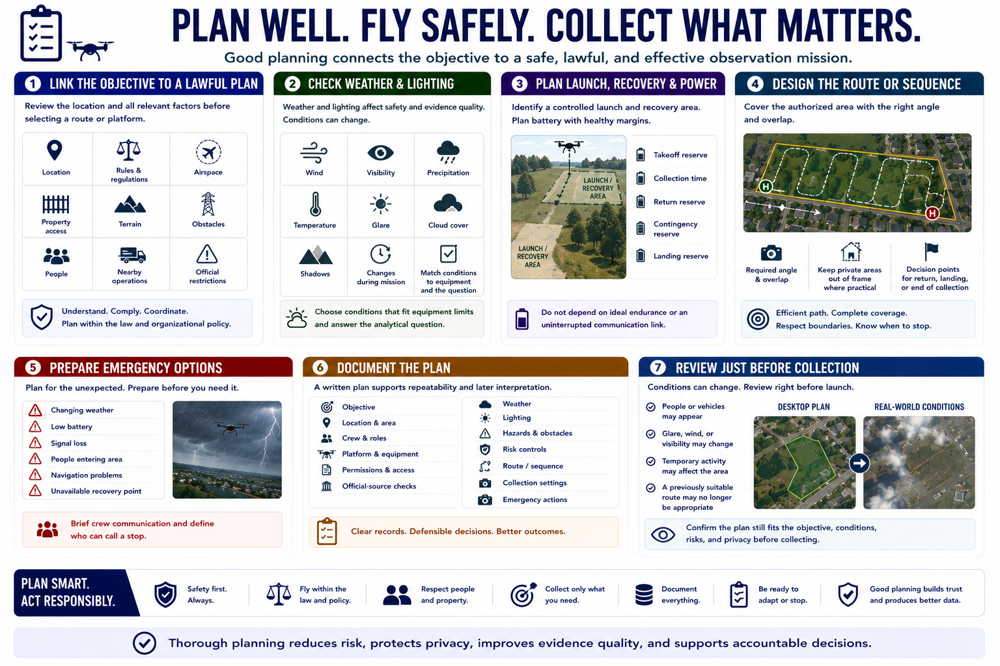

Planning the Observation Mission
Connecting to LMS... Progress: in progress

Narration
Planning connects the observation objective to a safe and lawful method. Review the location, applicable rules, airspace, property access, terrain, obstacles, people, nearby operations, and current official restrictions before selecting a route or platform.
Weather and lighting affect both aircraft safety and evidence quality. Wind, visibility, precipitation, temperature, glare, cloud cover, and shadows may change during the mission. Select conditions that fit equipment limitations and the analytical question.
Identify a controlled launch and recovery area when using a drone. Plan battery margins for takeoff, collection, return, contingencies, and landing. Do not build a route that depends on ideal endurance or an uninterrupted communication link.
Design a flight path or observation sequence that covers the authorized area with the required angle and overlap. Keep unnecessary private areas outside the frame where practical. Mark decision points for returning, landing, or ending collection.
Prepare emergency options for changing weather, low battery, signal loss, people entering the area, navigation problems, or an unavailable recovery point. Brief crew communication and define who can call a stop.
Document objective, location, crew, platform, permissions, official-source checks, weather, lighting, hazards, controls, route, collection settings, and emergency actions. A written plan supports repeatability and later interpretation of the imagery.
Review the plan immediately before collection because conditions can change. A route that was reasonable during desktop planning may become unsuitable when people, vehicles, glare, wind, or temporary activity appear.